Step products
Each step of the discovery run publishes its own result: a card to read, pictures, an explorer where it helps, and the full data in a standard format. Open any tile; agents read the same cards as Markdown (index.md).
How the run went
Run timelineresults
The run itself
8stages ran
0failed
614seconds
staticmode
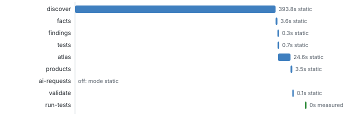
Project passportresults
Probe and intake
2services
14model files
5plugins
1without own code
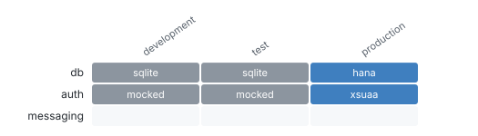
Evidence ledgerneeds a look
Findings and gaps
142findings
13measured
0AI (gated)
19open questions

AI ledgernot run here
AI gap pass
19AI could answer
mode static: no AI requests in this run (19 open questions an AI could answer; run with --mode static+ai)
What the app is
Model mapresults
cds compile (CSN)
13entities
29service entities
6compositions
53things depend on Travel
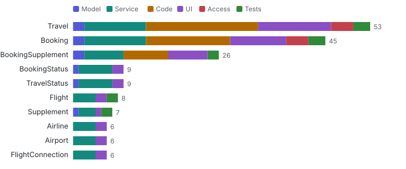
API surfaceresults
EDMX, OpenAPI, AsyncAPI
2services
23entity sets
137OpenAPI paths
20open without role
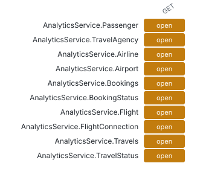
Behaviour matrixresults
Handler AST
13handlers
11rules
6rejections
2helpers
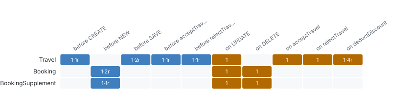
Screen mapneeds a look
UI5 and Fiori annotations
2apps
5pages
21UI promises
7UI only
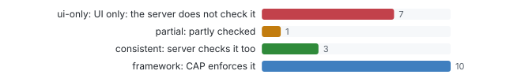
Access mapneeds a look
Authorization
13operations
6users
4open without role
0measured cells differ
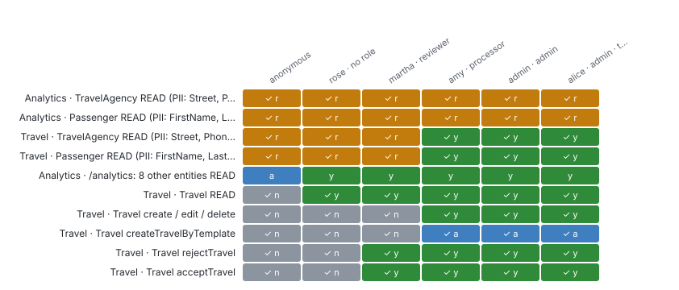
Where it is fragile
Code findingsproblems
Lint, Opengrep, rules
71findings
21files
4critical
32warnings
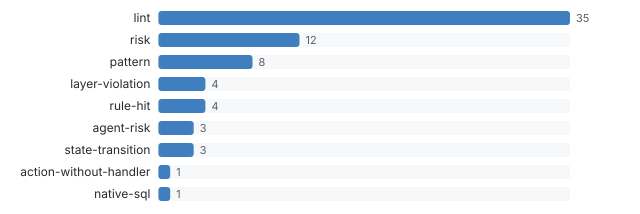
Hotspots and change couplingresults
Git history
1238commits
113files changed
83hottest: package.json
39coupled pairs
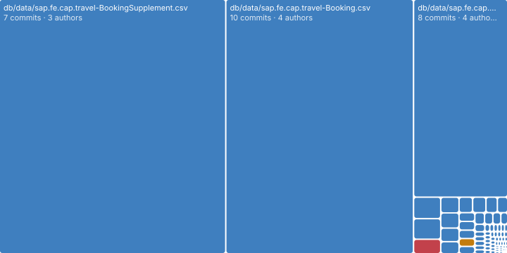
How well it is tested
Classification treeresults
Test design
122classes
7categories
12covered today
19pairwise rows
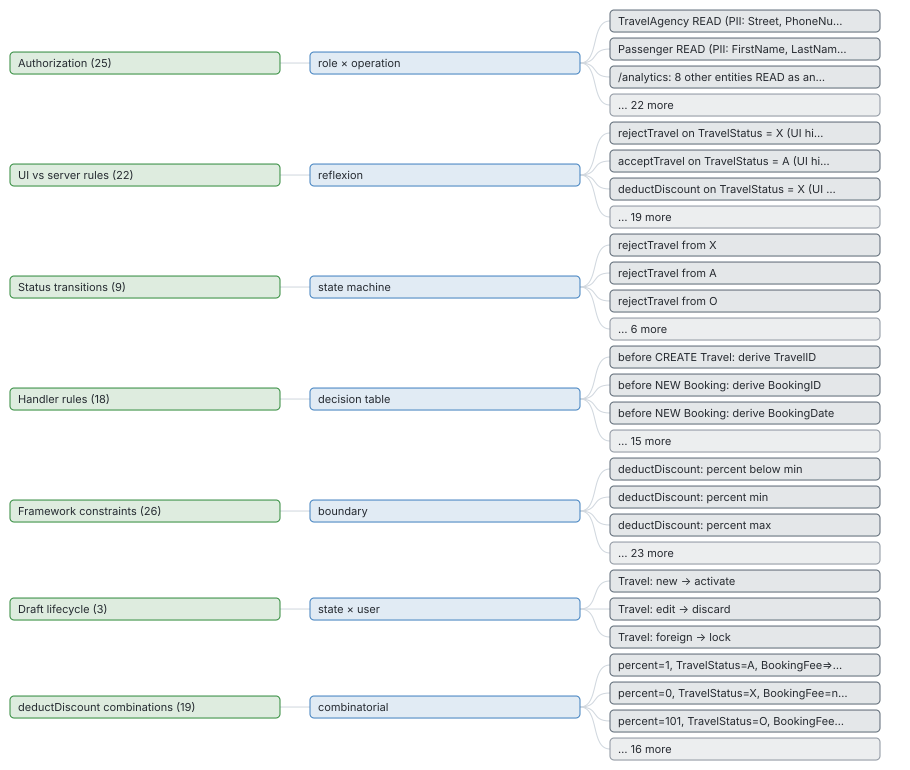
Test resultsresults
Generated tests and test run
12passed
0failed
7skipped
110requests recorded
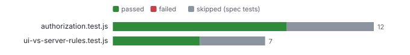
Coverage by classneeds a look
Coverage
13%classes tested
58untested
0failing
9/11rules reached
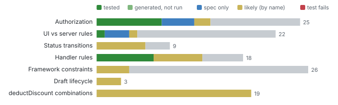
Test strengthnot run here
Mutation testing
nightlyscore
mutation testing runs in its own nightly workflow (mutation.yml); no report next to this run
Ask across products
node bin/query.js <out> impact Travel # what is affected if I change it node bin/query.js <out> who-can "Travel DELETE" # who may do it, static and measured node bin/query.js <out> tests-for srv/travel-service.ts:105 # which tests reach this code